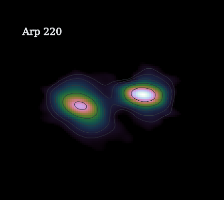
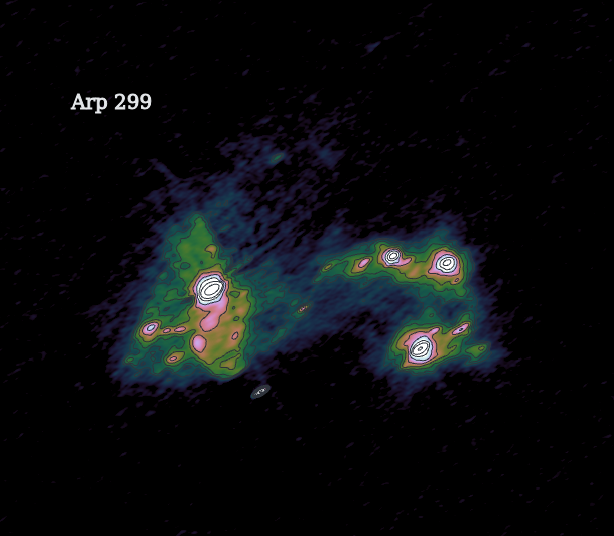
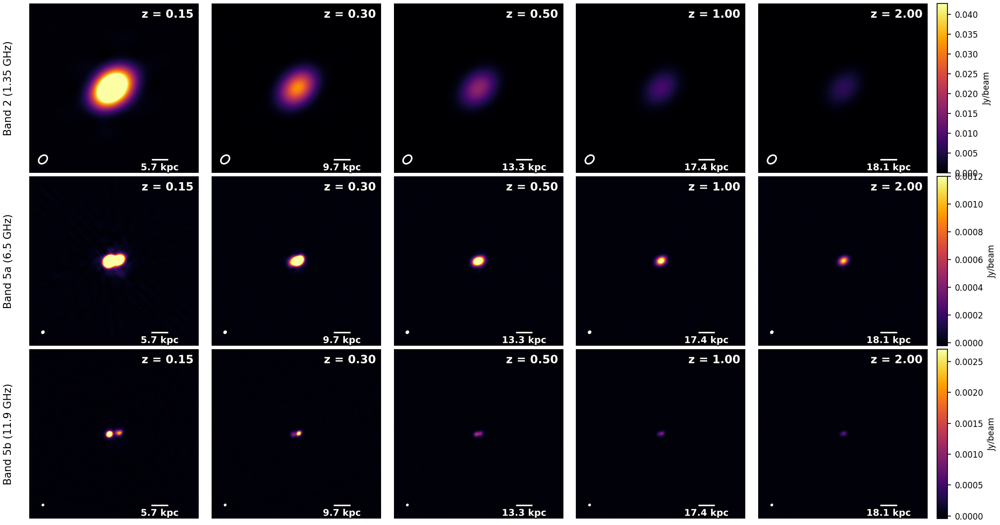
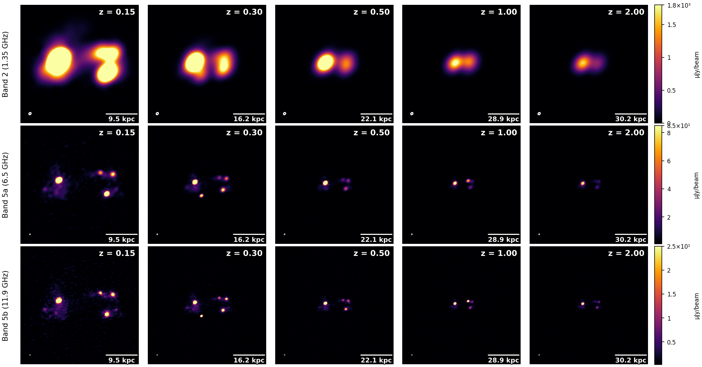

Arp 220
Late-stage ULIRG merger; distance ≈ 78 Mpc; IR-based SFR ≈ 200 M⊙ yr−1.
Nearby starburst templates — Arp 220 at z = 0.018 and Arp 299 at z = 0.0109 — how long does its nuclear structure remain detectable when the same physical source is placed at cosmological distances and observed with SKA-MID?
Local LIRGs and ULIRGs provide resolved laboratories for dusty, merger-driven star formation. Redshifting their radio structure tests when SKA-MID can still distinguish compact starburst morphology from an unresolved high-redshift source.
The redshift scaling follows Ghasemi-Nodehi et al. (2022): local radio-continuum maps are used as templates for how dusty star-forming galaxies would appear at higher redshift.
The apparent size is set by the angular-diameter distance:
\[ \theta(z) = \theta(z_0)\,\frac{D_A(z_0)}{D_A(z)} . \]The integrated radio flux is scaled by distance, K-correction and optional SFR evolution:
\[ S_\nu(z) = S_\nu(z_0) \left[\frac{D_L(z_0)}{D_L(z)}\right]^2 \left[\frac{1+z}{1+z_0}\right]^{1-\alpha} f_{\rm SFR}(z) . \]The SFR term follows the Schreiber et al. main sequence:
\[ f_{\rm SFR}(z) = \frac{{\rm SFR}_{\rm MS}(M_\star,z)} {{\rm SFR}_{\rm MS}(M_\star,z_{\rm ref})}, \] \[ \log_{10}{\rm SFR}_{\rm MS} = m - m_0 + a_0 r - a_1\left[\max(0,m-m_1-a_2 r)\right]^2, \] \[ m=\log_{10}\left(\frac{M_\star}{10^9 M_\odot}\right), \quad r=\log_{10}(1+z). \]This page shows the simple total-emission case: one radio image, one global spectral scaling, and no intrinsic size evolution.
The LIRG sky models were provided by Geferson Lucatelli iD (IAA-CSIC), from his high-resolution, multi-scale, multi-frequency observations of LIRGs; see his PhD thesis.

Late-stage ULIRG merger; distance ≈ 78 Mpc; IR-based SFR ≈ 200 M⊙ yr−1.

Interacting LIRG system; distance ≈ 45 Mpc; IR-based SFR ≈ 90 M⊙ yr−1.
The source shrinks in angular size and loses flux rapidly, while the higher-frequency maps preserve the compact double-nucleus structure for longer at low redshift. At later epochs, the source becomes beam-limited and progressively blends into a compact detection.


This first implementation captures the main cosmological effects and provides a controlled baseline for comparing LIRG analogues across redshift. The same framework can be made progressively more realistic by adding further radio-continuum physics.